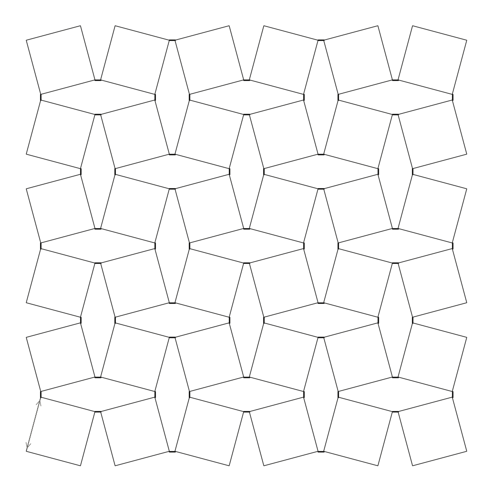
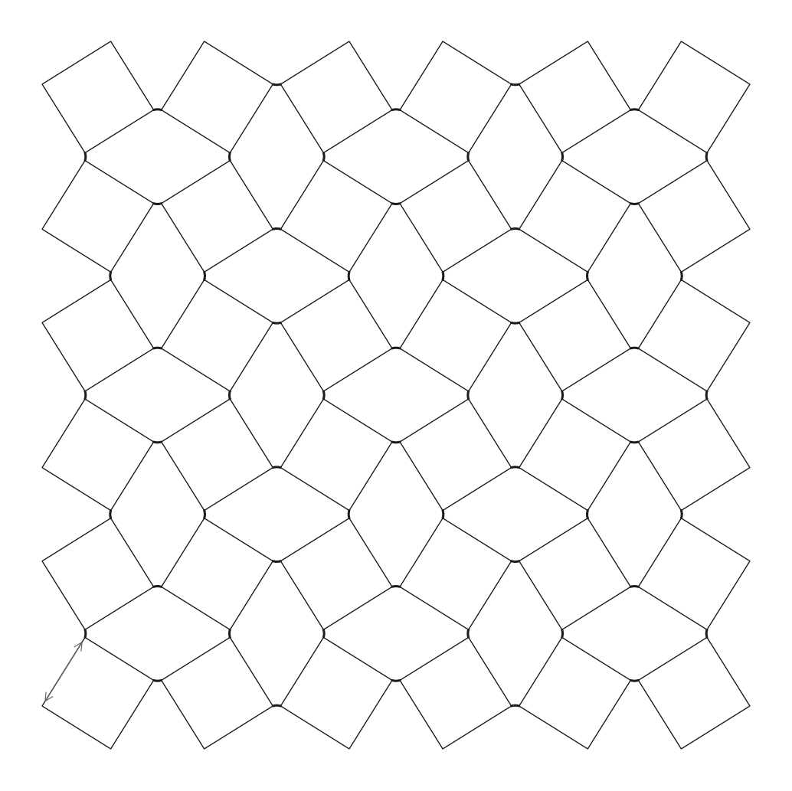
A lattice of square tiles joined at their corners by short ligaments expands in every direction when pulled in one. Three descriptions of this rotating-squares lattice are developed for a printable PLA design (a = 10 mm, ligaments 1.0 × 0.8 mm, printed at θ0 = 15°): rigid squares on ideal pins, which give ν = −1 exactly; beam-like ligaments treated by an energy method, which give ν = −0.9915 and an effective modulus of 23.7 MPa; and a beam finite-element model written for this work, which reproduces the energy method to 10−5 for the infinite lattice and shows a 0.1 % edge effect in a 5 × 5 part.
A failure analysis then shows that the ligaments, not the kinematic locks or buckling, limit the part: they yield at about ±0.9 % lattice strain, giving a safe operating range of −0.56 % to +0.55 % with a safety factor of 1.5. The ANSYS comparison and Part 2, the application, are still to be completed.
Dashed boxes marked PLACEHOLDER are reserved for ANSYS results, screenshots and photographs still to be added. Text in red italics marks items to check.
Materials with a negative Poisson's ratio widen when stretched. After Lakes made the first deliberately auxetic foam [1] and Evans and co-workers named the class [2], the search turned to mechanisms simple enough to analyse exactly. Grima and Evans proposed the most compact one: rigid squares connected at their corners, which counter-rotate under load and open the gaps between them [3]. Because all squares turn by the same angle, the expansion is the same in every direction and the Poisson's ratio is exactly −1. The idea was soon generalised to rectangles, triangles and other rigid units, and used to explain auxetic behaviour in crystals and zeolites [4].
Experiment and manufacturing then caught up. Bertoldi and co-workers showed that a rubber sheet with a square array of circular holes buckles into the rotating-squares pattern under compression [5]; cut patterns in flat sheets realise the same mechanism directly [6], and rotating units with bistable hinges hold their deployed shape [7]. Recent work has turned to what happens away from the ideal: a characteristic length that makes small samples behave differently from large ones [8], and a description of the soft, non-uniform deformations the mechanism allows [9]. Both bear on the finite, printed part studied here. A broader review of auxetic structures and their uses is given in [10].
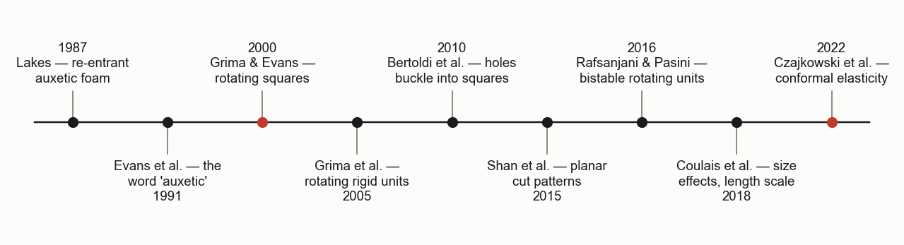
All models describe the same lattice. Squares of side a are arranged in a checkerboard: type A squares are rotated by −θ, type B by +θ. Each corner is joined to exactly one neighbour, so every square has four hinges. At θ = 0 the squares touch edge to edge; at θ = 45° they meet corner to corner. The printed part is made at θ0 = 15°, with ligaments of length Lh and width w bridging the corners and an out-of-plane thickness t. The models differ in what a hinge is allowed to do, and the progression is one of adding mechanisms.
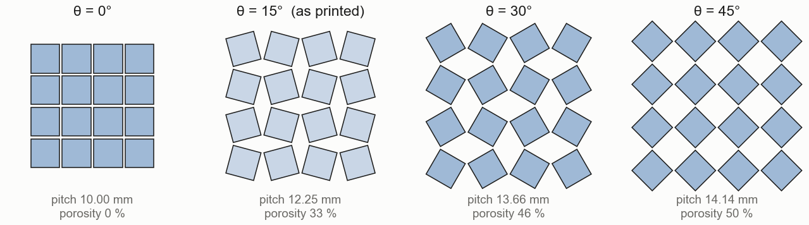
In the original model [3] the squares are rigid and the hinges are frictionless points. Requiring that the hinge between two neighbours is reached from both centres (Fig. 3) gives the pitch, identical in x and in y:
Strains are measured from the as-printed state, \(\varepsilon = p/p_0 - 1\). Since the pitch is the same function in both directions, every increment of rotation stretches both equally:
The result holds for any size, any material and any strain, not only small ones. The second relation marks the open lock: at 45° the pitch is at its maximum and the lattice can stretch no further. The model is a mechanism with one degree of freedom, so it predicts shape but no stiffness.
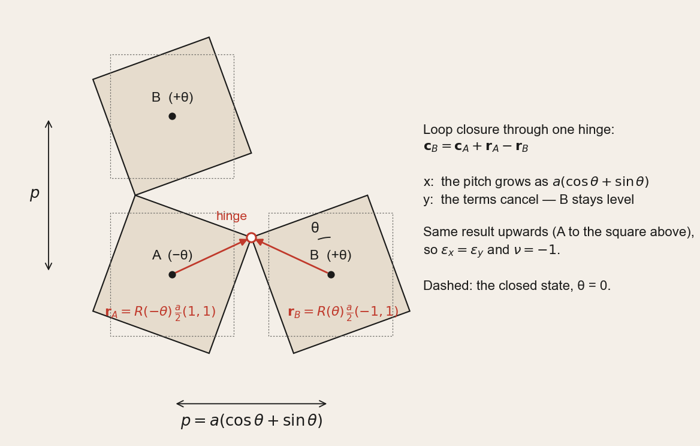
The derivation in Fig. 3 is the backbone of every model in this report. With rotation matrix R and the corner vectors \(\mathbf r_A = R(-\theta)\tfrac a2(1,1)\) and \(\mathbf r_B = R(\theta)\tfrac a2(-1,1)\), the centre of B follows from \(\mathbf c_B = \mathbf c_A + \mathbf r_A - \mathbf r_B\). The x-components add to a(cos θ + sin θ); the y-components are equal and cancel. Repeating the construction for the square above A uses the top-left and bottom-left corners and gives the same pitch upward, which is where the isotropy, and so ν = −1, comes from.
The same loop, linearised about θ0, is used again in the compliant model: if a hinge is not a perfect pin, the two corners need not meet, and the mismatch between them is what stretches or bends the ligament. The construction also fixes the hinge topology used in the finite-element model. Each corner of a type A square is pinned to its right, top, left and bottom neighbour in turn (a "pinwheel"), and type B squares use the mirror image. Choosing the opposite corners would make the lattice close rather than open as θ increases.
A printed hinge is a short ligament clamped into both squares. When the squares turn by ∓Δθ about the ligament's mid-point, its ends rotate oppositely with no relative sideways motion, so the ligament is in pure bending at constant moment. It also stretches if the squares move apart without rotating. Each ligament is therefore a pair of springs, \(k_r = EI/L_h\) for relative rotation and \(k_a = EA/L_h\) for stretching, with \(I = tw^3/12\) and \(A = tw\). Linearising the loop of Fig. 3, the stretch of a horizontal and a vertical ligament is
where b, the lever arm, converts square rotation into hinge opening. A 2 × 2 repeating cell holds four horizontal and four vertical ligaments, so its strain energy is
Minimising U over the internal rotation Δθ, then comparing with the energy density of an isotropic sheet, gives the effective properties. Rotation and stretching act as springs in series, and their balance is set by a single number ρ:
Thin ligaments (ρ → 0) recover ν = −1; thick ones let stretching take part, which on its own gives ν = 0. Stiffness comes almost entirely from bending, \(E_{\mathrm{eff}} \propto E\,w^3/(L_h a^2)\), and is independent of t.
With ligament arms of length Lh rotating with the squares, the pitch and the nominal stress along the mechanism path (no stretching) become
The stress grows without bound as p′ → 0, which moves the open lock from 45° to 43.1° for this design.
The peak ligament stress combines bending at constant moment with the axial force that equilibrium of a vertical cut requires, \(N = \sigma_x p_0 t\):
As an independent check, the lattice is also modelled with two-node Euler–Bernoulli frame elements (three degrees of freedom per node), written from scratch. Each square is a stiff star of four beams from its centre to its corners; each ligament is four PLA beam elements welded to the corner nodes. The element stiffness is the usual bar-plus-beam matrix rotated into global axes, \(k_g = T^{\mathsf T} k_l\, T\) [11]. For stability, a geometric stiffness KG is built from the element axial forces of a pre-loaded state, and the critical load factor follows from [11, 12]
Two versions are used: a periodic 2 × 2 cell, in which the right edge wraps onto the left and the average strains are extra unknowns, representing the infinite lattice of Eqs. (3)–(5); and finite N × N arrays with free edges, representing the printed part. No equation from the analytical models enters the finite-element code.
| Model | Rotation | Hinge bending | Ligament stretching | Large rotation | Free edges | Yield, contact, buckling |
|---|---|---|---|---|---|---|
| Rigid squares, pins [3] | ✓ | ✓ | locks only | |||
| Energy method, Eq. (5) | ✓ | ✓ | ✓ | |||
| Large-rotation path, Eq. (6) | ✓ | ✓ | ✓ | ✓ (Eq. 7) | ||
| Beam FE, periodic cell | ✓ | ✓ | ✓ | |||
| Beam FE, finite array | ✓ | ✓ | ✓ | ✓ | buckling, Eq. (8) |
Table 1. Mechanisms kept by each model. None includes deformation of the squares themselves or the flexibility of the ligament root, which a solid ANSYS model does.
All models are implemented in base MATLAB as short functions driven by a single parameter file, so every number in this report follows from one set of inputs. Each stage ends with checkpoint tests that compare two independent routes to the same quantity; all pass. The design is the printable part:
| Parameter | a (mm) | Lh (mm) | w (mm) | t (mm) | θ0 | p0 (mm) | Array |
|---|---|---|---|---|---|---|---|
| Printed design | 10 | 1.0 | 0.8 | 5 | 15° | 13.25 | 5 × 5 |
The material is PLA with E = 3.5 GPa, σy = 50 MPa and νs = 0.36, treated as linear-elastic up to yield. Every stiffness scales with E and every strain limit with σy/E, so measured values for the printed filament can be substituted directly. The lattice is analysed in plane stress; the 5 mm thickness makes the ligaments (t/w)2 ≈ 39 times stiffer out of plane than in plane.
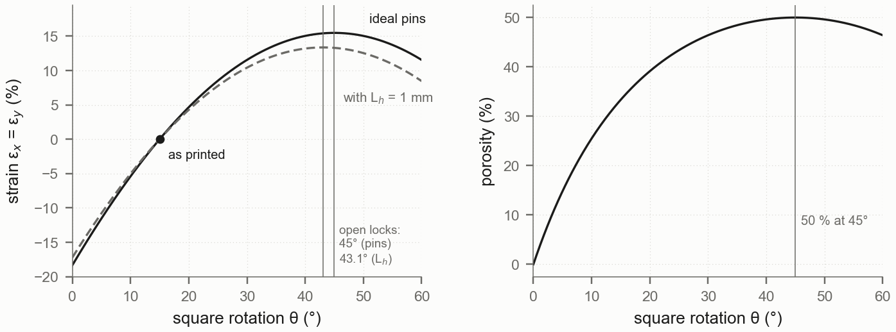
The kinematics of Fig. 4 bound the useful range of the mechanism. From θ0 = 15° the ideal lattice can stretch by \(2/\sqrt3 - 1 = 15.5\,\%\) before the open lock and compress by \(\sqrt{2/3} - 1 = -18.4\,\%\) before the squares close. Ligament arms reduce the tensile range to 13.4 %; in compression the squares first touch at θ = −2.7°, a strain of −21 %, found by a separating-axis overlap test on each square and its eight neighbours.
The finite array is gripped like a tensile specimen: the centres of the left column are held in x, those of the right column are displaced by ε(N − 1)p0, and a single centre is held in y. Everything else is free, so the edge squares may rotate and the lattice may expand sideways. Strains are measured by a least-squares fit to the centres of the interior squares, and the effective modulus from the grip force. Results do not change with the stiffness of the square stars between 102 and 107 times PLA, or with 1 to 8 elements per ligament.
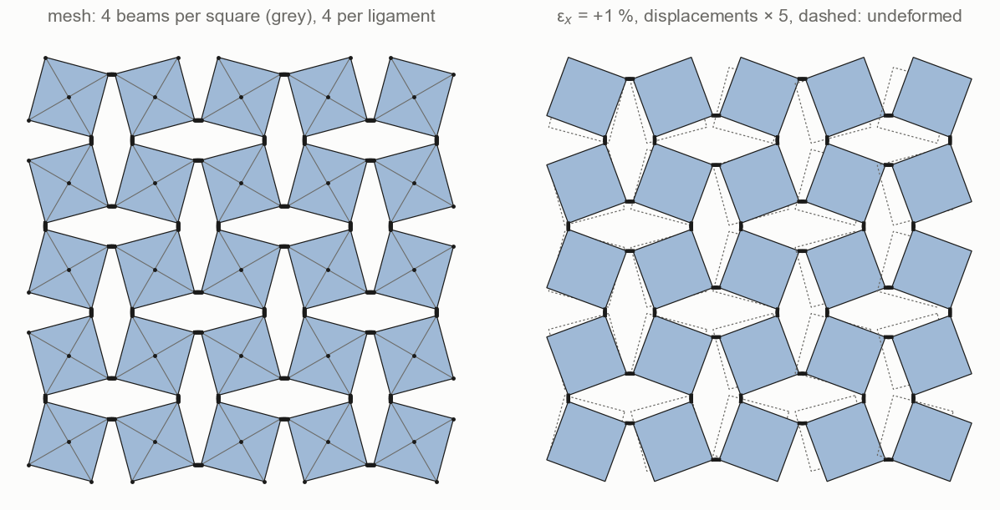
The ANSYS model is intended to test what the beam models leave out: the solid ligament root, stress concentration at the re-entrant corners, deformation of the squares, and out-of-plane behaviour. To make the comparison like for like, it uses the printed 5 × 5 geometry exported from MATLAB as a closed outline and the same grips as the beam model: edge square centres displaced in x, free in y and in rotation. The runs below are planned; results will be entered in Table 3.
| Run | Load | Model | Extracted |
|---|---|---|---|
| A | x tension, 1 % | 2D plane stress, linear elastic | Eeff, ν from interior centres |
| B | x compression, 1 % | 2D plane stress, linear elastic | Eeff, ν; check against A |
| C | x tension to the open lock | 2D, large deflection | stress–strain curve, peak ligament stress |
| D | compression pre-load | 3D solid, eigenvalue buckling | first in-plane and out-of-plane modes |
Table 2. Planned ANSYS runs. Fill in mesh size, element type and solver settings.
Two quantities from ANSYS feed back into the analytical models. The measured stiffness calibrates an effective ligament length, Lh + c·w, which absorbs the root flexibility that a clamped beam ignores; a script that overlays the ANSYS points on the MATLAB curves solves for c directly. The peak stress at the ligament root, divided by the nominal stress of Eq. (7), gives the stress-concentration factor Kt, which is set to 1 until then.
| Printed design | ν | vs ANSYS | vs FE periodic | Eeff (MPa) | vs ANSYS | vs FE periodic |
|---|---|---|---|---|---|---|
| ANSYS (run A) | — | — | ||||
| Rigid squares, pins | −1 | — | −0.85 % | 0 (mechanism) | — | — |
| Energy method | −0.9915 | — | 0.00 % | 23.69 | — | 0.00 % |
| Beam FE, periodic cell | −0.9915 | — | ref. | 23.69 | — | ref. |
| Beam FE, 5 × 5 array | −0.9904 | — | +0.12 % | 23.68 | — | −0.04 % |
| Beam FE, 13 × 13 array | −0.9900 | — | +0.15 % | 23.68 | — | −0.03 % |
Table 3. Small-strain properties. Percentages: difference in ν (sign: towards zero is positive) and in Eeff. ANSYS row and columns to be filled from run A.
The three beam-level models agree. The energy method and the periodic finite-element cell differ by about 10−5 in both properties, although they share no equations; tension and compression give identical results because both are linear. The finite arrays are slightly less auxetic and slightly softer, for two reasons:
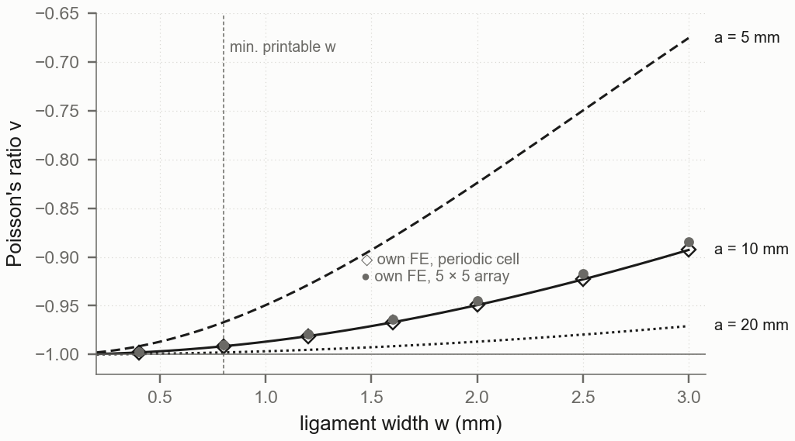
The beam models predict a deviation from −1 that is small for any printable ligament. A solid model is expected to show more: a short, stubby ligament (Lh/w = 1.25) rotates partly inside the squares, which makes it softer and lets the squares themselves deform.
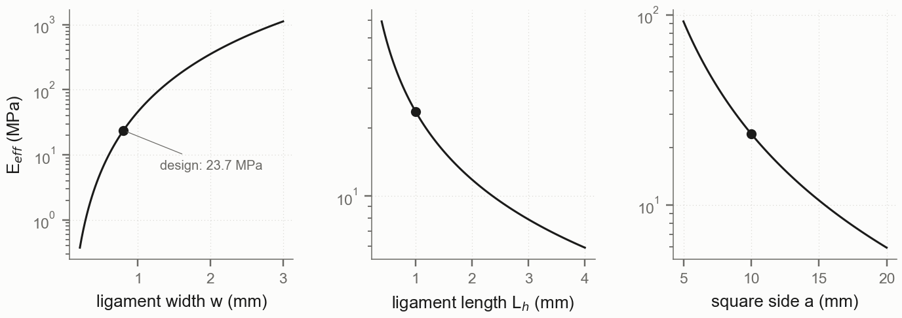
The lattice is about 150 times softer than solid PLA. Its modulus scales roughly with w3, so the printer's resolution in the ligament controls the stiffness more than any other dimension: a 0.1 mm error in w changes Eeff by about 40 %. This, rather than the model, is likely to dominate the scatter between printed samples.
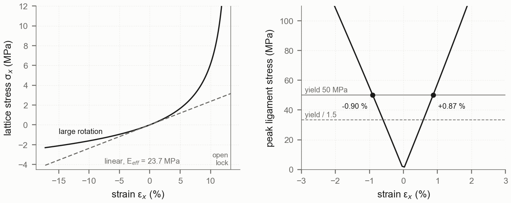
Ninety-three per cent of the ligament stress comes from bending. Because all of the rotation is concentrated in a short ligament, its outer fibre reaches the yield strain of PLA, σy/E = 1.4 %, when the lattice as a whole has strained by only 0.87 % in tension and 0.90 % in compression. The beam model confirms the stress at the centre of a large array to within 0.3 %; near the free edges of the 5 × 5 part the worst ligament carries 6.5 % more, and the safe range is reduced by that factor.
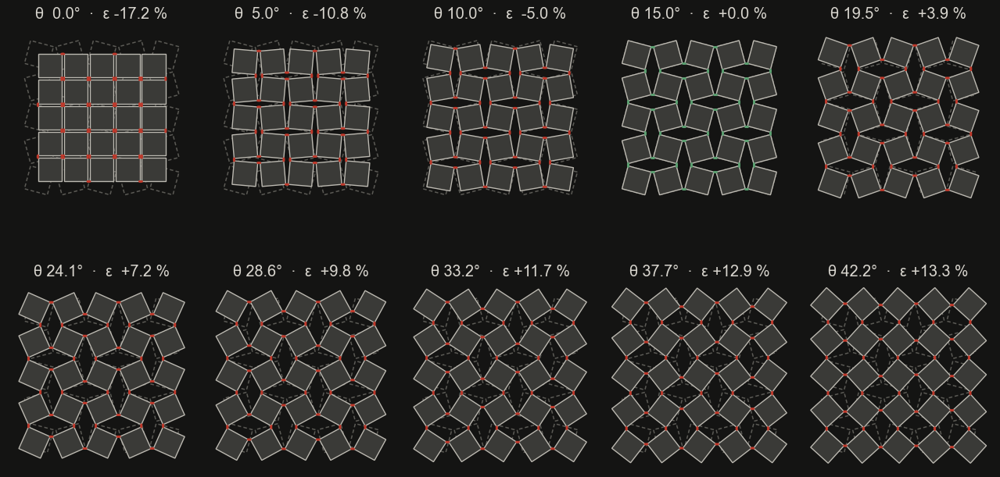
Only the as-printed frame is green. Every visibly deformed state lies beyond the yield of the ligaments, which is the central practical finding of Part 1: the large, symmetric expansion that makes the rotating-squares lattice attractive is reached in PLA only through plastic hinges. A printed part will still expand auxetically under a hand load, but it will not return fully to its printed shape and will crack after a small number of cycles.
The geometric limits lie far beyond yield. The open lock (+13.4 %) and the square contact (−21 %) are fifteen and twenty-three times the yield strain. The linear buckling analysis of Eq. (8) on the finite array finds no in-plane bifurcation anywhere near the working range (its first load factor corresponds to a strain far outside what a linear analysis can describe), which is expected: the lattice is printed already rotated, so compression continues the mechanism smoothly rather than switching to a new pattern. A single ligament carries about 14 N at yield against an Euler load of over 7 kN [12], and at Lh/w = 1.25 it is too short to buckle at all.
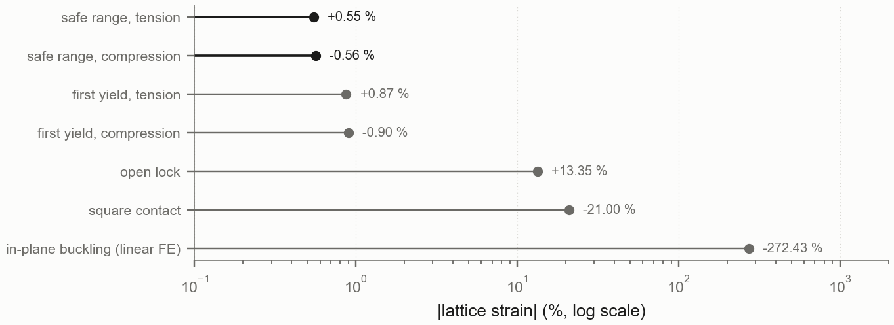
Observations.
[1] Lakes, R. (1987). Foam structures with a negative Poisson's ratio. Science, 235, 1038–1040.
[2] Evans, K. E., Nkansah, M. A., Hutchinson, I. J., & Rogers, S. C. (1991). Molecular network design. Nature, 353, 124.
[3] Grima, J. N., & Evans, K. E. (2000). Auxetic behavior from rotating squares. Journal of Materials Science Letters, 19, 1563–1565.
[4] Grima, J. N., Alderson, A., & Evans, K. E. (2005). Auxetic behaviour from rotating rigid units. Physica Status Solidi (b), 242, 561–575. [verify title and pages]
[5] Bertoldi, K., Reis, P. M., Willshaw, S., & Mullin, T. (2010). Negative Poisson's ratio behavior induced by an elastic instability. Advanced Materials, 22, 361–366.
[6] Shan, S., Kang, S. H., Zhao, Z., Fang, L., & Bertoldi, K. (2015). Design of planar isotropic negative Poisson's ratio structures. Extreme Mechanics Letters, 4, 96–102. [verify authors and pages]
[7] Rafsanjani, A., & Pasini, D. (2016). Bistable auxetic mechanical metamaterials inspired by ancient geometric motifs. Extreme Mechanics Letters, 9, 291–296.
[8] Coulais, C., Kettenis, C., & van Hecke, M. (2018). A characteristic length scale causes anomalous size effects and boundary programmability in mechanical metamaterials. Nature Physics, 14, 40–44.
[9] Czajkowski, M., Coulais, C., van Hecke, M., & Rocklin, D. Z. (2022). Conformal elasticity of mechanism-based metamaterials. Nature Communications, 13, 211.
[10] Ren, X., Das, R., Tran, P., Ngo, T. D., & Xie, Y. M. (2018). Auxetic metamaterials and structures: a review. Smart Materials and Structures, 27, 023001.
[11] Cook, R. D., Malkus, D. S., Plesha, M. E., & Witt, R. J. (2002). Concepts and Applications of Finite Element Analysis (4th ed.). Wiley.
[12] Timoshenko, S. P., & Gere, J. M. (1961). Theory of Elastic Stability (2nd ed.). McGraw-Hill.